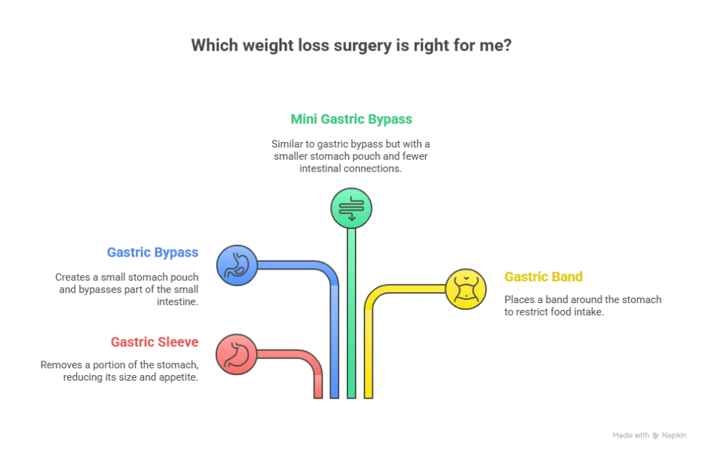
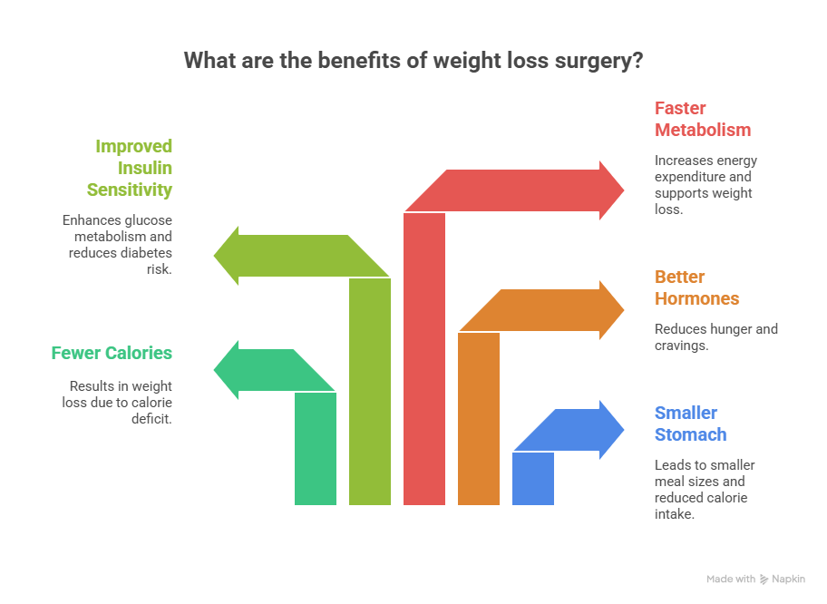
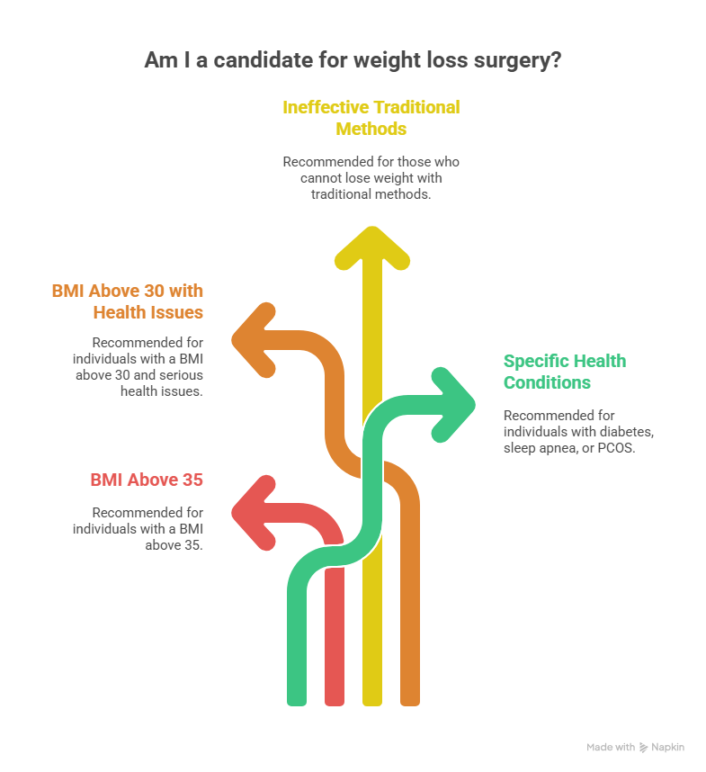

Weight loss can be challenging for many people, especially when diet and exercise alone are not enough to manage severe obesity. In such cases, weight loss surgery becomes a powerful and safe option to help people reduce weight, improve health, and live a better life. But many patients still wonder — how does weight loss surgery work? Is it safe? How does it actually help in losing weight and keeping it off?
This detailed guide explains how weight loss surgery works, what happens inside the body, the benefits, types of procedures, and everything you need to know before choosing this treatment. If you are considering Weight Loss Surgery in Delhi, specialists like Dr. Atul Peter’s offer advanced, safe, and effective options tailored to individual needs.
How Does Weight Loss Surgery Work?
This detailed guide explains how weight loss surgery works, what happens inside the body, the benefits and types of procedures.
Book Your Appointment TodayUnderstanding Weight Loss Surgery
Weight loss surgery, also known as bariatric surgery, includes different medical procedures that help people lose weight by changing how their stomach and digestive system work. These surgeries are designed for those who are unable to lose weight with regular methods or who have health problems due to obesity, such as:
- Diabetes
- High blood pressure
- Sleep apnea
- Joint pain
- Fatty liver disease
But before choosing surgery, patients often ask, Why does weight loss surgery work? and how weight loss surgery works on a long-term basis. The answer lies in two powerful mechanisms:
- Restriction – making the stomach smaller
- Malabsorption – changing the way the body absorbs calories
Types of Weight Loss Surgeries

1. Gastric Sleeve Surgery
Gastric sleeve surgery removes about 70–80% of the stomach, leaving a thin, tube-like sleeve. Because the stomach becomes smaller, patients feel full faster and naturally eat less. The surgery also reduces the hunger hormone, which helps control appetite. It is one of the most commonly performed procedures due to its simplicity and strong results.
2. Gastric Bypass Surgery
In gastric bypass, the surgeon creates a small stomach pouch and reroutes a part of the intestine. This reduces how much food you can eat and how many calories your body absorbs. It has a powerful impact on weight loss and diabetes management. The procedure works through restriction, malabsorption, and hormonal changes.
3. Mini Gastric Bypass Surgery
Mini gastric bypass involves creating a long, narrow stomach pouch and bypassing a part of the intestine with a single connection. It offers excellent weight loss results with a shorter, simpler surgery compared to traditional bypass. The procedure reduces calorie absorption and improves metabolic health. It is highly effective for obesity-related conditions like diabetes.
4. Gastric Band Surgery
In this procedure, a soft silicone band is placed around the upper part of the stomach to create a small pouch. The band can be tightened or loosened according to weight loss progress. This limits how much food you can eat at one time. Though used less today, it offers a non-permanent and adjustable option.
How does Weight Loss Surgery Work?
1. By Reducing the Size of the Stomach (Restriction)
Weight loss surgery makes the stomach much smaller, so it can hold only a limited amount of food. This means you feel full quickly even after eating small portions. Because you naturally eat less, your daily calorie intake drops significantly. This restriction is one of the main reasons weight loss begins immediately after surgery.
2. By Changing How the Body Absorbs Calories (Malabsorption)
Some surgeries reroute a portion of the small intestine, reducing how many of calories and nutrients your body absorbs. With fewer calories entering the bloodstream, weight loss becomes faster and more consistent. This also lowers fat absorption, which helps improve cholesterol levels. Malabsorption supports long-term weight control when combined with healthy habits.
3. By Changing Hunger and Fullness Hormones
Weight loss surgery reduces the production of ghrelin, the hormone that makes you feel hungry. At the same time, it increases hormones that promote fullness and stabilize blood sugar. This helps reduce cravings and emotional eating naturally. These hormonal shifts play a major role in long-term success and explain why weight loss surgery works so effectively.
4. By Improving Metabolism
After surgery, the digestive system communicates more efficiently with the brain, helping regulate appetite and energy usage. Your metabolism improves, allowing the body to burn calories more effectively. Many patients also experience better control of diabetes and insulin levels. This internal reset helps maintain weight loss for years.
What Happens Inside the Body After Weight Loss Surgery?
Understanding the internal changes helps explain how does weight loss surgery work in real life.

1. Smaller Stomach ? Smaller Meals
You can no longer eat large quantities of food. Even 3–4 small bites can make you full.
2. Fewer Calories = Weight Loss
Since food intake reduces, your body uses stored fat as energy.
3. Better Hormones = Less Hunger
After stomach size is reduced, hormones that cause hunger are reduced naturally.
4. Improved Insulin Sensitivity
This is why weight loss surgery is extremely effective for:
- Type 2 diabetes
- PCOS
- High insulin levels
5. Faster Metabolism
Your body burns calories more efficiently, especially in the first 12–18 months.
Who Should Consider Weight Loss Surgery?
This surgery is usually recommended for:

- People with a BMI above 35
- People with a BMI above 30 and serious health issues
- Those who cannot lose weight with traditional methods
- Those with diabetes, sleep apnea, or PCOS
If you’re considering Weight Loss Surgery, advanced centers and experts like Dr. Atul Peter’s offer world-class treatment, personalized plans, and safe outcomes.
Weight loss depends on:
- Type of surgery
- Lifestyle changes
- Medical condition
On average:
- Gastric Sleeve – 25–35% of total body weight
- Gastric Bypass – 30–40%
- Mini Bypass – 35–45%
Most patients lose 70–90% of excess weight within 12–18 months.
How Does Weight Loss Surgery Work?
This detailed guide explains how weight loss surgery works, what happens inside the body, the benefits and types of procedures.
Book Your Appointment TodayRisks and Side Effects
All surgeries have some risks, but weight loss surgery is considered safe when done by experienced surgeons.
Possible side effects:
- Nausea
- Vitamin deficiency
- Mild weakness
- Changes in bowel habits
Most of these are manageable with proper care and follow-up.
Conclusion
Weight loss surgery is one of the most effective and long-lasting treatments for obesity. It works by reducing stomach size, changing digestion, controlling hunger hormones, and improving metabolism. These combined effects explain how does weight loss surgery work, how weight loss surgery works, and why it works so well.
For individuals seeking safe, customized, and trusted Weight Loss Surgery in Delhi, specialists like Dr. Atul Peter’s offer world-class care and advanced treatment options.
Frequently Asked Questions
How does Weight Loss Surgery work?
Is Weight Loss Surgery safe?
How long does it take to lose Weight after surgery?
Will I gain weight again after surgery?
Who is a good candidate for Weight Loss Surgery?
Is Weight Loss Surgery permanent?
Recommended Further Reading
Have Personal Health Questions?
Consult with Dr. Atul Peters and our expert multidisciplinary team at Max Smart Super Speciality Hospital, Saket, New Delhi.
Book Your Consultation